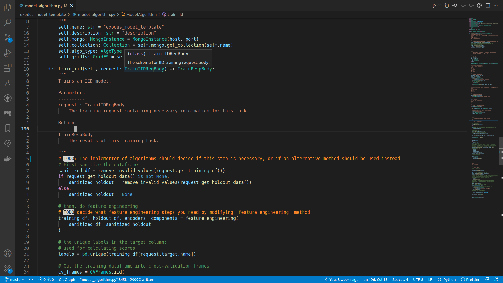
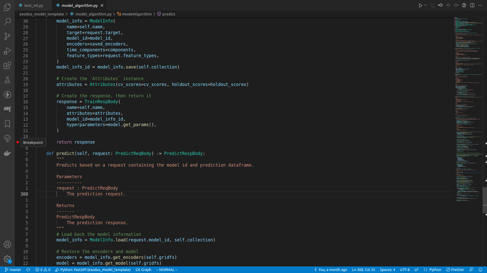
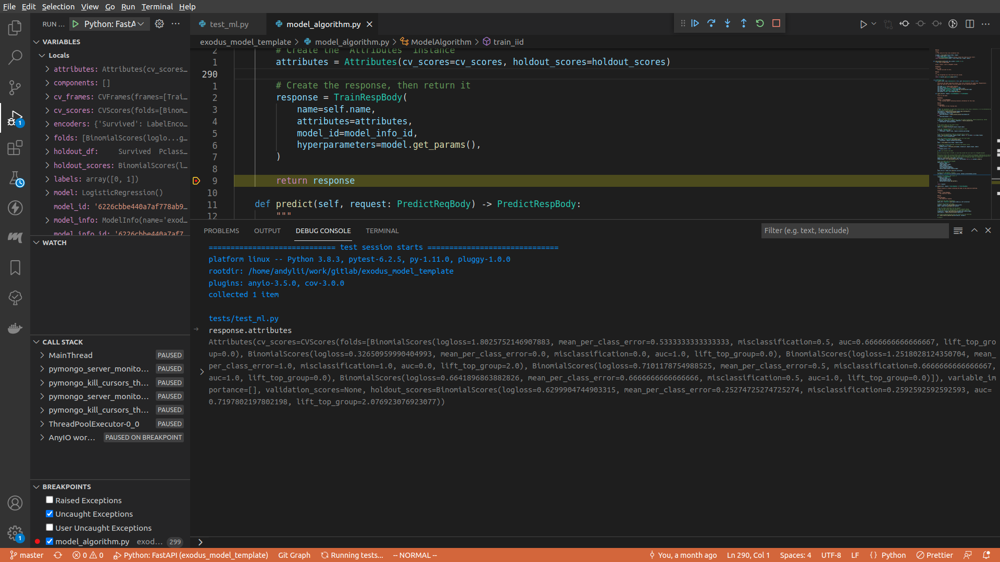

Introduction
This package is the template for creating a new Exodus IID model algorithm. Your goal as a developer is to implement your own model algorithm using this package.
What is a model algorithm?
A model algorithm in the Exodus project is a service that can train a machine learning model, persist the trained model, fetch the persisted model from MongoDB, and finally predict using the persisted model.
How do I read this documentation?
cd books; python -m http.server
Then visit http://localhost:8000 in your browser.
Dependencies
- Python 3.8+
- Poetry
- A packaging and dependency management tool for Python.
- Install with:
curl -sSL https://raw.githubusercontent.com/python-poetry/poetry/master/get-poetry.py | python -
- Poethepoet
- A task runner that works well with poetry.
- Install with:
pip install poethepoet
- Python TOML library
- The TOML library for Python.
- Install with:
pip install toml
Setup the model template
The model template comes with a fully functional model that can do training and predicting, albeit with rather poor predicting capability. To setup the model template, several steps are necessary:
- Renaming the model template package
- Installing dependency libraries
Renaming the package
When you get the package, it will be named as exodus_model_template, which is most definitely not the
name for the model algorithm you are going to build. To rename the entire package, run the renaming script:
python scripts/rename.py [NAME_OF_THE_MODEL]
Installing dependency libraries
To install the dependency libraries, enter the following command (assuming you've already installed the packages specified in the Dependencies section):
poetry install --no-root
This command will install all the dependency libraries for you.
The libraies
The model algorithm template depends on several libraries, the ones that are used extensively are:
- pandas: the de-facto go-to data analysis package for Python. We are using v1.4.0.
- Note that
pandasartifacts such asDataFrameare not backward compatible. Think it through if you want to bump its version.
- Note that
- numpy: Python's math libaray. We are using v1.21.0.
- scikit-learn: the machine learning Swiss knife library. Currently only the
LabelEncoderclass is used. We are using v1.0.2.- Note that
scikit-learnartifacts such asLabelEncoderare not backward compatible. Think it through if you want to bump its version.
- Note that
- pymongo: the MongoDB Python client library.
- jinja2: a templating tool for Python. Used for generating migration scripts.
- fastapi: the web framework we chose to run the model algorithm service on. We are using v0.14.1.
- pydantic: the data validation library for Python classes. We are using v.1.9.0.
- exodusutils: the utility functions for Exodus. The version of this package is subject to change.
Run the model template
As mentioned previously, the model algorithm template contains a fully functional model algorithm that can be used to train and predict. To see it in action, we have defined several commands.
The commands
For the list of available commands, simply enter:
poe --help
Run the model algorithm service
poe start
# Or if you want to specify a port:
#poe start --port [PORT]
This command will start a MongoDB container and a model algorithm container. By default the model algorithm container can be accessed through http://localhost:5566/, but you can designate a port to the command.
❯ poe start
Poe => PORT=${port} docker-compose up --build -d
# ... snipped ...
Successfully built a60ab63716b1
Successfully tagged exodus_model_template_exodus_model_template:latest
Creating exodus_model_template_exodus_model_template_1 ... done
Creating exodus_model_template_web_app_1 ... done
Creating exodus_model_template_mongo_1 ... done
You can send a request to the model algorithm container to see if it is working:
❯ curl "http://localhost:5566/info"
{"name": "exodus_model_template", "description": "description"}
Using the webapp to test out the model algorithm
If you go to http://localhost:3000, you will see a web page that allows you to test out the model algorithm. Select a CSV file, upload it and select the proper feature types, and then click Train Model. For predicting with a model, type in the model id, upload a CSV file for prediction, and then press Predict.
Watching the model algorithm service
poe watch
If you do this while the service is down, the command will have no effect.
Stoping the model algorithm service
poe stop
❯ poe stop
Poe => PORT=$(python scripts/stop.py);
if test $? -eq 0; then PORT=$PORT docker-compose down; else echo "No container running, not stopping anything"; fi
Stopping exodus_model_template_mongo_1 ... done
Stopping exodus_model_template_exodus_model_template_1 ... done
Removing exodus_model_template_mongo_1 ... done
Removing exodus_model_template_exodus_model_template_1 ... done
Removing network exodus_model_template_default
If you do this while the service is down, the command will have no effect.
How to create your own model algorithm
This section will walk you through the process of creating a model algorithm from the ground up. More accurately, it will describe the following processes:
- Implementing a model algorithm
- How to manage dependencies
- How to setup the editor
- How to train a model
- How to persist the model in MongoDB
- How to predict using a previously trained model
- Testing the model algorithm
- Using the landing page
- Using command line tools
- Debugging the model algorithm
- Running unit tests to ensure the correctness of some basic operations
- Publishing your model algorithm
- Modifying the model algorithm
- Migrating the
ModelInfo - Bumping the version
- Migrating the
Implementing the model algorithm service
This section will walk you through implementing the model algorithm service.
The model algorithm template already contains a working example. For the rest of the documentation, we will be using that to demonstrate the process.
The only files you should modify in theory are those two:
model_algorithm.py, which contains the actual model training, persisting and predicting.model_info.py, which defines the schema of the model you are persisting into MongoDB.
Adding or removing dependency libraries
Before you start creating your own model, you need to install some machine learning libraries that contain the algorithms you will be using. poetry, the package manager we are using for this project, actually comes with a neat virtual environment right out of the box, so you do not need to worry about messing up your host environment.
Take our model algorithm template for example. We decided to use Linear Regression and Logistic Regression as our machine learning algorithm (there are 2 of them because Linear Regression only handles regression problems, while Logistic Regression only handles categorical ones). These algorithms can be found as a part of the scikit-learn package, so that's what we installed for this example.
Adding a dependency library
To install the scikit-learn package and add it to the dependency libraries, simply do the following:
poetry add scikit-learn
The above command does not specify a version for the package, so poetry will just use the newest one that is compatible with all the other packages we've listed as dependencies. If you want to use the latest version:
poetry add scikit-learn@latest
Or if you want to stick to a specific version:
poetry add scikit-learn@1.0.2
Removing a dependency library
Suppose instead of those machine learning algorithms, you decided that you want to use something else. The scikit-learn package contains the LabelEncoder class, which we based one of our feature engineering methods (you will know more about this later!) on, so it does not make sense to remove the library from your dependencies.
The below is only an example and should not actually be run, but suppose you want to remove scikit-learn:
poetry remove scikit-learn
Setting up the editor
In this section we will talk about how to setup an editor, so that it is easier to make your own model algorithm service.
Vim
If you are a hardcore coder, chances are you already know how to use Vim?
Packages to use
NeoVim
NeoVim provides much better editing experience than vanilla Vim.
Conquer of Code
CoC lets you look up definition, autocomplete, and stuff. It uses different language servers under the hood.
VSCode
VSCode is a modern editor that is extremely expandable.
Basic usage
To open a VSCode session, navigate to the model algorithm template directory, and run the following command:
code .
This starts a VSCode session.
If you are not familiar with coding, going through the official VSCode Python tutorial docs is a good idea.
VSCode can recognize poetry environments, so make sure you select the appropriate Python interpreter (i.e. the one with your model algorithm's name in it).
Basic hotkeys
- To expand / collapse the sidebar, press
ctrl+b. - To open a file, you can press
ctrl+p. - To type in a VSCode command, press
ctrl+shift+p. - To start a terminal session, press
ctrl+shift+`.
Extensions
- Python
- The official extension for Python language support.
- Once you've installed it, remember to also activate
pylance, the type checker extension for Python language.
- Python Indent
- The extension that handles indents correctly. I do not know why it is not part of the official extension, but this extension is the one that handles everything correctly.
- autoDocstring
- Makes writing comments for your algorithm that much easier.
Screenshot


If everthing is wired up correctly, you should be able to see code definitions when your mouse is on top of an imported method or class, and there should be no unknown imports.
Train a model
In order to train a machine learning model and obtain its performance metrics, we will be doing the following procedure:
- Sanitize the training input
- Perform feature engineering
- Extract labels for categorical problems
- Calculate cross validation scores
- Train the machine learning model
- Calculate holdout score
- Save the model
- Return the result
All of the code is in the files model_algorithm.py and model_info.py.
To start things off, let's modify the description of your model algorithm:
class ModelAlgorithm:
def __init__(self, host: Optional[str] = None, port: Optional[str] = None) -> None:
# ... snipped ...
self.description: str = "description" # TODO Change me!
After you've figured out the description of your model algorithm, you can start implementing the train_iid method, the entrypoint for training an IID model.
def train_iid(self, request: TrainIIDReqBody) -> TrainRespBody:
If you enter a newline underneath the comments, and insert request., there should be a lot of autocomplete suggestions:

The class TrainIIDReqBody is defined in the exodusutils library, and contains a myriad of helper methods and variables. If we right click on the TrainIIDReqBody symbol, and select Go to definition, we will be able to see what's in it:

class TrainIIDReqBody(TrainReqBodyBase):
# ... snipped ...
validation_data: Optional[bytes] = Field(
default=None, description="The validation data as a sequence of bytes. Optional"
)
holdout_data: Optional[bytes] = Field(
default=None, description="The holdout data as a sequence of bytes. Optional"
)
fold_assignment_column_name: Optional[str] = Field(
default=None,
description="The name of the fold assignment column. If not provided, Exodus will cut cross validation folds in a modulo fashion. If this field is defined, it is required to be a valid column in the input dataframe. This column is not included in `feature_types`, and will be discarded during training.",
)
There seems to be only three fields, however the TrainIIDReqBody class actually inherits from the TrainReqBodyBase class:
class TrainReqBodyBase(BaseModel):
# ... snipped ...
training_data: bytes = Field(description="The training data as a sequence of bytes")
feature_types: List[Column] = Field(
default=[], description="The features present in training data"
)
target: Column = Field(
description="The target column. Must be present in feature_types"
)
folds: int = Field(
default=5, ge=2, le=10, description="Number of folds for this experiment"
)
We will be using class TrainIIDReqBody's methods and fields in the upcoming sections.
Sanitizing input
It could be the case that the input data contains unprocessable characters for the machine learning algorithm. For example, the model algorithm template's algorithm cannot process datasets with NaN or empty strings. To fix that, we start out the training process by sanitizing the dataset:
# TODO: The implementer of algorithms should decide if this step is necessary, or if an alternative method should be used instead
# First sanitize the dataframe
sanitized_df = remove_invalid_values(request.get_training_df())
raw_holdout_df = request.get_holdout_data()
if raw_holdout_df is not None:
sanitized_holdout = remove_invalid_values(raw_holdout_df)
else:
sanitized_holdout = None
Notice how we are not parsing the request here, instead there already exists helper functions get_training_df and get_holdout_data.
Since our model algorithm cannot handle invalid values, we can invoke the remove_invalid_values function from the exodusutils package to do that for us.
If the machine learning algorithm you chose has different restrictions, you should implement them here.
Note that holdout_data is actually an optional field for training, and we do not want to sanitize a nonexist dataset. So you want to make sure you sanitize it only when you're sure it is not a None.
Feature engineering
After we've ensured that there's nothing unprocessable in our input, we can move on to the feature engineering step, where we manipulate the input data to generate more suitable training input.
# then, do feature engineering
# TODO decide what feature engineering steps you need by modifying `feature_engineering` method
training_df, holdout_df, encoders, components = feature_engineering(
sanitized_df, sanitized_holdout
)
If you right click on the feature_engineering symbol and select Go to definition, you should be able to see that this is a method defined in model_algorithm.py as well.
def feature_engineering(training_df: pd.DataFrame, holdout_df: Optional[pd.DataFrame]):
"""
Does feature engineering for the dataframes.
Here you should use the helper methods in `exodusutils` package, i.e. `time_component_encoding`, `one_hot_encoding` and `label_encoding`.
Parameters
----------
training_df : pd.DataFrame
The training dataframe
holdout_df : Optional[pd.DataFrame]
The holdout dataframe
Returns
-------
tuple[DataFrame, Optional[DataFrame], Dict[str, LabelEncoder], List[str]]
The modified training df and holdout df, the encoders for each categorical column, and the time component columns.
"""
training_df, holdout_df, encoders = label_encoding(training_df, holdout_df)
training_df, components = time_component_encoding(training_df)
# datetime columns are being removed because the necessary features derived from them
# have been generated in the previous step
# However, it is up to the developer to decide whether or not this step is necessary
training_df = remove_datetime_columns(training_df)
if holdout_df is not None:
holdout_df, _ = time_component_encoding(holdout_df)
holdout_df = remove_datetime_columns(holdout_df)
return training_df, holdout_df, encoders, components
The exact procedures for feature engineering is entirely up to you, and the code shown here is really just an example. Let's break it down step by step.
Label encoding
training_df, holdout_df, encoders = label_encoding(training_df, holdout_df)
Label encoding is the procedure that turns a categorical column into a numeric one, with the numbers being the label for a categorical value. Here we have to make sure the generated columns are consistent between the training dataframe and the holdout dataframe, hence we pass both into the method. It handles the case when the holdout dataframe is actually None.
Time component encoding
training_df, components = time_component_encoding(training_df)
This encodes the datetime columns in the dataframe to different numeric columns.
For example, suppose we have the following dataframe:
| ds |
|---|
| 2022/01/01 |
| 2022/03/12 |
| 2022/05/23 |
| 2022/07/04 |
After we perform time component encoding, the result will be:
| ds | YEAR_ds | QUARTER_ds | MONTH_ds | WEEK_ds | WEEKDAY_ds | DAY_ds | HOUR_ds |
|---|---|---|---|---|---|---|---|
| 2022/01/01 | 2022 | 1 | 1 | 52 | 6 | 1 | 0 |
| 2022/03/12 | 2022 | 1 | 3 | 10 | 6 | 12 | 0 |
| 2022/05/23 | 2022 | 2 | 5 | 21 | 1 | 23 | 0 |
| 2022/07/04 | 2022 | 2 | 7 | 27 | 1 | 4 | 0 |
Remove datetime columns
Once we have done time component encoding, for our algorithm the datetime column is no longer needed.
training_df = remove_datetime_columns(training_df)
Handle holdout dataframe
If the holdout dataframe exists, we perform the same feature engineering on it as the training dataframe.
if holdout_df is not None:
holdout_df, _ = time_component_encoding(holdout_df)
holdout_df = remove_datetime_columns(holdout_df)
One-hot encoding
One-hot encoding is another encoding technique to transform categorical columns. More precisely, it encodes a categorical column into multiple numeric columns, each representing one value in the categorical column.
This encoding can be invoke by doing:
training_df, holdout_df, encoded_columns = one_hot_encoding(training_df, holdout_df)
You should choose either one of one-hot encoding and label encoding if you want to transform categorical columns.
Extract unique labels
In order to calculate cross validation scores properly for classification problems, we need to find out the total amount of categorical values in the target column. This is done in the below code snippet:
# the unique labels in the target column;
# used for calculating scores
labels = pd.unique(training_df[request.target.name])
Calculate cross validation scores
Next, we calculate the cross validation scores for the model. The procedure is as follows:
- Cut the training dataframe into several sub-frames
- For each of those sub-frames, create a machine learning model
- For each of those trained machine learning models, calculate their performance by comparing its predictions to another sub-frame
The corresponding code is the following snippet:
# Cut the training dataframe into cross-validation frames
cv_frames = CVFrames.iid(
training_df, request.folds, request.get_validation_data()
)
# Use the cross-validation frames to calculate the cv scores
folds = [do_cv_fold(cv_frame, request.target, labels) for cv_frame in cv_frames.frames]
cv_scores = CVScores(folds=folds)
We have provided several helper functions to make this a lot easier for you: the sub-frames splitting and the score calculations are all done by helpers in the exodusutils function! The only place you need modifying is in do_cv_fold function:
def do_cv_fold(train_frames: TrainFrames, target: Column, labels: np.ndarray):
"""
Does a cross validation fold. Includes training a cross validation model and calculating the score for the model.
Parameters
----------
train_frames : TrainFrames
The frames for this cross validation fold.
target : Column
The target column.
labels : np.ndarray
The unique classes that are involved in the classification problem.
Returns
-------
scores
The scores for this cross validation fold.
"""
cv_model = train_model(train_frames, target)
if train_frames.test is None:
raise ExodusBadRequest(detail=f"Cannot create test frame for this fold")
return calculate_score(cv_model, train_frames.test, target, labels)
This is a rather simple function, but there are 2 methods called here: train_model and calculate_score, the former correspond to the training model part, while the latter the score calculation part. We will go over them in the following sections.
Train the machine learning model
Let's take a look at the train_model function, where we actually train a machine learning model:
def train_model(train_frames: TrainFrames, target: Column):
"""
Trains a model.
Parameters
----------
train_frames : TrainFrames
The frames required during training. Includes the training dataframe, the validation dataframe, and the testing dataframe.
target : Column
The target column, tells you the name and the type of the column.
Returns
-------
model
The trained model.
"""
train = train_frames.train
features = train.loc[:, train.columns != target.name]
targets = train[target.name]
if target.data_type == DataType.double:
model = LinearRegression()
else:
model = LogisticRegression()
model.fit(X=features, y=targets)
return model
Here, we extract the sub-frame that we will train the model with:
train = train_frames.train
And then split the sub-frame into one dataframe with features to train with, and another one with only the target values to fit the machine learning model:
features = train.loc[:, train.columns != target.name]
targets = train[target.name]
If we are dealing with a regression problem, where the target column consists of numeric values, we use LinearRegression algorithm. Otherwise we are dealing with a classification problem, and we use LogisticRegression algorithm.
if target.data_type == DataType.double:
model = LinearRegression()
else:
model = LogisticRegression()
After we decide which algorithm to use, we can fit the model, and then return it:
model.fit(X=features, y=targets)
return model
Implementing your own thing
Most of the code here should be changed by you. In particular these are the things you need to consider:
- Perhaps your machine learning algorithm is able to handle both classification and regression problems
- Your model might need to filter out some more features
- Instead of
fit, your model might need to do something else - Your model might require a validation dataframe, which can be retreived via
train_frames.validation
Either way, the content of this function should only serve as an example, it is up to you to decide what should actually be the machine learning model.
Calculate a single set of scores
After we've trained a model, we want to be able to measure its performance. In our template this is done in the calculate_score function:
def calculate_score(
model: Union[LinearRegression, LogisticRegression], df: pd.DataFrame, target: Column, labels: np.ndarray
) -> Scores:
"""
Calculates the scores for a frame and a model.
The type of the model here should be modified.
Parameters
----------
model : Unknown
The model to score with.
df : pd.DataFrame
The frame to score with.
target : Column
The target column.
labels: np.ndarray
The unique classes that were present in the training dataframe in a classification problem
Returns
-------
Scores
The scores for the model and the frame.
"""
features = df.loc[:, df.columns != target.name]
predicted = model.predict(X=features)
actual = np.array(df[target.name].values)
if target.data_type == DataType.double:
# model type is LinearRegression here
if not isinstance(model, LinearRegression):
raise RuntimeError(
f"Got {model.__class__} when it should be LinearRegression"
)
return RegressionScores.get_scores(predicted, actual)
else:
# model type is LogisticRegression here
if not isinstance(model, LogisticRegression):
raise RuntimeError(
f"Got {model.__class__} when it should be LogisticRegression"
)
pred_proba = model.predict_proba(features)
return ClassificationScores.get_scores(predicted, pred_proba, actual, labels)
Let's go through this step by step:
- We extract the features from the given dataframe:
features = df.loc[:, df.columns != target.name] - We predict using the trained model and the extracted features:
predicted = model.predict(X=features) - We extract the actual values from the given dataframe:
actual = np.array(df[target.name].values) - If it is a regression problem, use the
RegressionScoreshelper class to calculate the scores:return RegressionScores.get_scores(predicted, actual) - Otherwise we use the
ClassificationScoreshelper class to calculate:pred_proba = model.predict_proba(features) return ClassificationScores.get_scores(predicted, pred_proba, actual, labels)
The RegressionScores and ClassificationScores helper classes will generate scores for you via the method get_scores, all you need to do is to provide the arguments.
Implementing your own thing
Just like the train_model function, a lot of this is subject to which model you chose to use. Maybe your model does not have a predict method nor a predict_proba method, maybe your model needs more information than just the features to predict. Either way, it is up to you to decide what should be in this function. Once you have figured out how to predict using the trained model, the helper classes will automatically generate the scores.
Save the model
Let's take a look at the following code snippet in the train_iid method:
# Save the model info into MongoDB
model_info_id = ModelInfo.save(
name=self.name,
target=request.target,
model=model,
encoders=encoders,
time_components=components,
feature_types=request.feature_types,
mongo=self.mongo,
gridfs=self.gridfs,
collection=self.collection,
)
And in model_info.py, the save method for ModelInfo is defined as:
@classmethod
def save(
cls,
name: str,
target: Column,
model: Union[LinearRegression, LogisticRegression],
encoders: Dict[str, LabelEncoder],
time_components: List[str],
feature_types: List[Column],
mongo: MongoInstance,
gridfs: GridFS,
collection: Collection,
) -> str:
model_id = save_sklearn_stuff(model, gridfs)
saved_encoders = {k: save_sklearn_stuff(v, gridfs) for k, v in encoders.items()}
model_info = cls(
name=name,
target=target,
model_id=model_id,
encoder_ids=saved_encoders,
time_components=time_components,
feature_types=feature_types,
)
doc = model_info.dict()
for field in model_info.encrypted_fields:
if doc.get(field) is None:
raise ExodusError(f'field = "{field}" is not a valid key for ModelInfo')
doc[field] = mongo.encrypt(doc[field])
return str(collection.insert_one(doc).inserted_id)
The save method returns a stringified ObjectId, which you should pass back to the user so that they can identify the model that was just trained.
The save method can be split into 3 parts:
- Saving
scikit-learnstuff - Creating a
ModelInfoinstance - Encrypting the
ModelInfoinstance and storing it into MongoDB
Saving scikit-learn stuff
The maximum size limit for a MongoDB document is 4MB. Unfortunately, it is not unlikely that your machine learning will exceed that limit. To handle this behavior, we can store our machine learning and label encoders in GridFS, a component of MongoDB that is designed to specifically handel this scenario.
def save_sklearn_stuff(stuff: Any, gridfs: GridFS) -> str:
return str(gridfs.put(pickle.dumps(stuff)))
We use this function to store scikit-learn artifacts, namely the machine learning model and the label encoders. The function is actually very simple:
- Dumps the thing into a byte sequence using
pickle, the de-facto default serializer for Python - Stores the byte sequence into GridFS, and retrieve an
ObjectId - Converts that
ObjectIdinto a string, for the former does not play well with built-in Python classes
Notice there is a FIXME beneath the comments, this is to warn you that by pickling an artifact, you are also including its dependencies such as libraries, versions, and so on. This makes it virtually impossible for backward compatibility if you ever plan to upgrade a package that you've installed. Luckily it is not really something you should do that often, if at all. Still, if you find yourself in need of upgrading a package, and you've pickled something generate from that package, chances are you are better off creating a new model that makes use of the newer package.
Store the necessary informations
Let's take a look at the declaration of the ModelInfo class:
class ModelInfo(BaseModel):
name: str
target: Column
model_id: str
encoder_ids: Dict[str, str]
time_components: List[str]
feature_types: List[Column]
encrypted_fields: List[str] = Field(
default=["target", "encoder_ids", "time_components", "feature_types"],
exclude=True,
)
model: Union[LinearRegression, LogisticRegression] = Field(
default=None, exclude=True
)
encoders: Dict[str, LabelEncoder] = Field(default=None, exclude=True)
The only ones that are required are name, target, model_id, encoder_ids, time_components, and feature_types. As for the rest:
encrypted_fieldsdescribes what you need to encrypt ifencryptedis set totrueinconfig.ini. See Appendix C for more info.modelis the actual machine learning model that you just trained. During prediction, you should be using this.encodersis the actual encoders. During prediction, you should be using this.
Let's get back to the save method:
model_info = cls(
name=name,
target=target,
model_id=model_id,
encoder_ids=saved_encoders,
time_components=time_components,
feature_types=feature_types,
)
Notice how we only fill in the required fields, and left the rest as default.
What should I include in ModelInfo?
Rule of thumb is to include anything you will need for prediction. That could include the following:
- A portion of the training dataframe
- Some more feature engineering artifacts
- Columns that require additional processing
What should I implement?
The developer of the model algorithm should implement the following:
- A way to dump the things into an object that can be downloaded (see
dump_to_base64method) - The
deletemethod, when you delete aModelInfoyou should also remove the relevant machine learning model and feature engineering artifacts
Encrypting & saving the ModelInfo
The MongoInstance class contains a method that encrypts values for you automatically, so encryption becomes almost trivial:
doc = model_info.dict()
for field in model_info.encrypted_fields:
if doc.get(field) is None:
raise ExodusError(f'field = "{field}" is not a valid key for ModelInfo')
doc[field] = mongo.encrypt(doc[field])
You turn the ModelInfo into a dictionary (this is the document we will be storing into MongoDB), and replace the fields you want to encrypt with the encrypted value.
If there's a key in the encrypted_fields variable that does not exist in the fields of ModelInfo, an exception will be raised.
To save the model, we insert it into the MongoDB collection corresponding to the model algorithm, and return the stringified ObjectId.
return str(collection.insert_one(doc).inserted_id)
Return the results
After we are done training and saving the model, the last step would be returning the results to the user.
# Create the `Attributes` instance
attributes = Attributes(cv_scores=cv_scores, holdout_scores=holdout_scores)
# Create the response, then return it
response = TrainRespBody(
name=self.name,
attributes=attributes,
model_id=model_info_id,
hyperparameters=model.get_params(),
)
return response
Here cv_scores and holdout_scores are both calculated earlier during the training process.
The model hyperparameters
Notice there's a field for hyperparameters in TrainRespBody. This is to record the machine learning algorithm's hyperparameters, and should be a Dict. Most of the machine learning algorithms provide a function to expose the set of hyperparameters, but if it is not the case you should look up the possible settings for the machine learning algorithm, and then put them in this field.
Piecing it together
Here's the train_iid method in its entirety (sans comments):
def train_iid(self, request: TrainIIDReqBody) -> TrainRespBody:
# SANITIZING #
sanitized_df = remove_invalid_values(request.get_training_df())
raw_holdout_df = request.get_holdout_data()
if raw_holdout_df is not None:
sanitized_holdout = remove_invalid_values(raw_holdout_df)
else:
sanitized_holdout = None
# FEATURE ENGINEERING #
training_df, holdout_df, encoders, components = feature_engineering(
sanitized_df, sanitized_holdout
)
labels = pd.unique(training_df[request.target.name])
# CROSS VALIDATION #
cv_frames = CVFrames.iid(
training_df, request.folds, request.get_validation_data()
)
folds = [
do_cv_fold(cv_frame, request.target, labels)
for cv_frame in cv_frames.frames
]
cv_scores = CVScores(folds=folds)
# TRAIN THE MODEL #
train_frames = TrainFrames(train=training_df, validation=request.get_validation_data())
model = train_model(train_frames, request.target)
# HOLDOUT #
if holdout_df is not None:
holdout_scores = calculate_score(model, holdout_df, request.target, labels)
else:
holdout_scores = None
# SAVING #
model_info_id = ModelInfo.save(
name=self.name,
target=request.target,
model=model,
encoders=encoders,
time_components=components,
feature_types=request.feature_types,
mongo=self.mongo,
gridfs=self.gridfs,
collection=self.collection,
)
# PREPARING RESPONSE #
attributes = Attributes(cv_scores=cv_scores, holdout_scores=holdout_scores)
response = TrainRespBody(
name=self.name,
attributes=attributes,
model_id=model_info_id,
hyperparameters=model.get_params(),
)
return response
Several things to note here:
- For the final machine learning model, we do not need to calculate its score. Therefore we use the helper class
TrainFrames, and invoke its methodiid_without_testto generate the training frame and the validation frame. - Remember in
do_cv_foldwe make use of the methodstrain_modelandcalculate_score? After we have calculated the cross validation scores, we can reuse those methods to calculate the final machine learning model, and calculate the holdout scores.
Now, we have successfully trained our machine learning model, and a set of scores to evaluate this model. In the following section we will see how persisting this model is possible.
Predicting with a trained model
Once we have successfully trained and stored a model, next we will need to predict something from this model. The general workflow is as follows:
- Load the model from MongoDB
- Sanitize the prediction input
- Apply the feature engineering steps
- Predict
- Format the predicted results
Load a model
In order to properly predict with a previously trained model, we need to first load the saved model from MongoDB.
Basically, you want to do the inverse of what you did during training: if you stored some LabelEncoders into GridFS, here you need to extract them, and so on.
@classmethod
def load(cls, model_id: str, collection: Collection, gridfs: GridFS):
obj = collection.find_one(filter=identify(model_id))
if not obj:
raise ExodusNotFound(f"No model found with id = {model_id}")
model_info = cls.parse_obj(obj)
model_info.encoders = {
k: load_sklearn_stuff(v, gridfs) for k, v in model_info.encoder_ids.items()
}
model_info.model = load_sklearn_stuff(model_info.model_id, gridfs)
return model_info
Compare the above with the code snippet where we store the machine learning model and encoders into GridFS:
model_id = save_sklearn_stuff(model, self.gridfs)
saved_encoders = {k: save_sklearn_stuff(v, self.gridfs) for k, v in encoders.items()}
Remember we had fields model and encoders in our ModelInfo? During load, we actually store those in the resulting ModelInfo, so we can guarantee that after loading a ModelInfo, it is safe to access the model, which is the machine learning model, and the encoders, which are the label encoders.
Sanitizing input
original_df = request.get_prediction_df(model_info.feature_types)
sanitized_df = remove_invalid_values(original_df)
This should be self-explanatory. Basically, here your code should be doing what you did to the training dataframe.
Notice how we have access to the prediction dataframe via get_prediction_df method from the PredictReqBody class.
Apply feature engineering
def apply_feature_engineering(df: pd.DataFrame, encoders: Dict[str, LabelEncoder]) -> pd.DataFrame:
encoded: pd.DataFrame = (df.pipe(apply_label_encoders, encoders).pipe(time_component_encoding))[0]
return encoded.pipe(fill_nan_with_average, list(encoders.keys())).pipe(remove_datetime_columns)
# ... snipped ...
df = apply_feature_engineering(sanitized_df, model_info.encoders)
Most of the things you are doing here are exactly the same as the feature_engineering part, except here you need to make sure you sanitize your dataframe properly.
Sanitize the result properly
Consider the following training dataframe, where there is only 1 column:
| column |
|---|
| foo |
| bar |
| baz |
Then after the column has been label encoded, the result becomes:
| column |
|---|
| 0 |
| 1 |
| 2 |
Where foo gets encoded to 0, bar becomes 1, and baz becomes 2.
However, if the prediction dataframe contains a value never seen during training, the encoder will not be able to deduce which label it should encode the value to, and will return a NaN. For example, consider the below dataframe:
| column |
|---|
| bar |
| quax |
| bar |
| foo |
After we apply our encoder, the result is:
| column |
|---|
| 1 |
| nan |
| 1 |
| 0 |
If your machine learning algorithm cannot handle NaN properly, then after you've applied the feature engineering encoders there is no way for the algorithm to perform prediction.
In situations like this, a common method is to impute the missing values with a designated special value. In exodusutils the method fill_nan_with_mode is doing just that: we extract the most frequent label for an encoded column, and force the invalid cells to that most frequent label.
In our example, the final result after we've applied the fill_nan_with_mode method will be:
| column |
|---|
| 1 |
| 1 |
| 1 |
| 0 |
Predict
After we've sanitized and applied feature engineering, it is finally time to predict with our model. Note that during cross validation we've already predicted using a calculated machine learning model though, so here it's more or less just repeating what you did back then.
features = df.loc[:, df.columns != model_info.target.name]
predicted = model_info.model.predict(features)
Here we extract the features we are using, then predict using the selected features.
Format the results
After we have our raw prediction results, we need to piece it back into a JSON string.
if model_info.target.data_type != DataType.double:
predicted = model_info.encoders[model_info.target.name].inverse_transform(predicted)
sanitized_df[PREDICTION_COLNAME] = predicted
if model_info.target.data_type != DataType.double:
classes = list(model_info.model.classes_)
predict_proba = pd.DataFrame(model_info.model.predict_proba(features), columns=classes)
sanitized_df = pd.concat([sanitized_df, predict_proba], axis=1).reset_index(drop=True)
else:
classes = list()
columns_to_drop = [
c
for c in list(sanitized_df.columns)
if c not in request.keep_columns and c != PREDICTION_COLNAME and c not in classes
]
results: List[Dict[str, Any]] = json.loads(
str(sanitized_df.drop(columns=columns_to_drop).to_json(orient="records"))
)
The return value of the predict method contains only a field of type List[Dict[str, Any]], where a single Dict represents the prediction results for a single row in the prediction input dataframe. That being said, it is easier for us to manipulate on a dataframe than doing each Dict by hand, so let's see how we can achieve that.
Turn our predicted value back to strings
Remember that we did label_encoding during feature engineering? This will turn our target column into a column with numeric class labels, and we need to turn those back into actual strings.
To do that, we make use of the LabelEncoder.inverse_transform method:
if model_info.target.data_type != DataType.double:
predicted = model_info.encoders[model_info.target.name].inverse_transform(predicted)
If your model didn't do label_encoding during feature engineering, you can omit this step.
Attach the predicted values
Then we attach our predicted value to the input dataframe.
sanitized_df[PREDICTION_COLNAME] = predicted
If we are dealing with a classification problem, each prediction should come with the prediction probabilities of all the possible classes. To do that, we create a new dataframe containing the prediction probabilities, and then concatenate the new dataframe to our result dataframe.
Note that we have to use the strings instead of the model's classes, which are just a bunch of numbers.
if model_info.target.data_type != DataType.double:
classes = list(model_info.encoders[model_info.target.name].classes_)
predict_proba = pd.DataFrame(model_info.model.predict_proba(features), columns=classes)
sanitized_df = pd.concat([sanitized_df, predict_proba], axis=1).reset_index(drop=True)
else:
classes = list()
We also need to keep track of the classes we've added to the result dataframe.
Drop columns we don't need
Then we need to filter out the columns we don't need for the result.
columns_to_drop = [
c
for c in list(sanitized_df.columns)
if c not in request.keep_columns and c != PREDICTION_COLNAME and c not in classes
]
We only keep the columns that are explicitly specified by the user (via the keep_columns field in the request), the prediction result column (the PREDICTION_COLNAME variable, which is an alias for the string "prediction"), and the classes for the target column if it's a classification problem.
Piecing it together
Here's the predict method in its entirety (sans comments):
def predict(self, request: PredictReqBody) -> PredictRespBody:
# LOADING #
model_info = ModelInfo.load(request.model_id, self.collection, self.gridfs)
# SANITIZING #
original_df = request.get_prediction_df(model_info.feature_types)
sanitized_df = remove_invalid_values(original_df)
# APPLYING FEATURE ENGINEERING #
df = apply_feature_engineering(sanitized_df, model_info.encoders)
# PREDICTING #
features = df.loc[:, df.columns != model_info.target.name]
predicted = model_info.model.predict(features)
# FORMATING RESULTS #
if model_info.target.data_type != DataType.double:
predicted = model_info.encoders[model_info.target.name].inverse_transform(predicted)
sanitized_df[PREDICTION_COLNAME] = predicted
if model_info.target.data_type != DataType.double:
if not isinstance(model_info.model, LogisticRegression):
raise RuntimeError(
f"Got {model_info.model.__class__} when it should be LogisticRegression"
)
classes = list(model_info.encoders[model_info.target.name].classes_)
predict_proba = pd.DataFrame(
model_info.model.predict_proba(features), columns=classes
)
sanitized_df = pd.concat([sanitized_df, predict_proba], axis=1).reset_index(
drop=True
)
else:
classes = list()
columns_to_drop = [
c
for c in list(sanitized_df.columns)
if c not in request.keep_columns
and c != PREDICTION_COLNAME
and c not in classes
]
# PREPARING RESPONSE #
results: List[Dict[str, Any]] = json.loads(
str(sanitized_df.drop(columns=columns_to_drop).to_json(orient="records"))
)
response = PredictRespBody(prediction=results)
return response
Testing the model
There are several ways to verify that your model algorithm is able to run properly
- Running unit tests
- Basic tests to ensure basic functionalities work. If any of the unit tests failed, something is wrong with your code.
- You are encouraged to create new unit tests, since they are much more simple to use then setting up your own script.
- Using the landing page
- If you just want to test whether your code can work for a piece of data, use your browser and navigate to the main page of the model algorithm.
- You can run experiments through the landing page, and then inspect the output of the model algorithm service by the
poe watchcommand.
- Using the script / writing your own scripts
- If you don't have access to a browser.
- Need to setup things in a rather particular way.
Running unit tests
Setup
Before you run the tests, you need to fire up the MongoDB container. This can be done via the below command:
PORT=1234 docker-compose up -d mongo
The PORT environment variable will not actually be used, it's just docker-compose does not realize this variable is not needed if you're only starting the MongoDB service.
Your MongoDB service will be running, and can be reached at port 27018.
Make sure you have a MongoDB service up and running!
Otherwise all the unit tests will fail due to model algorithm timing out!
Run the test
Via command line
poe test
This will run all the unit tests within tests/ directory, which are the files that contain a test_ prefix in their names.
Via VSCode
- Press
ctrl+shift+p, or go toHelp>Show All Commands - Type in
Python: Configure Tests, select that and then pressenter - Select
pytest - Select
tests - Go to the
testingpanel


If no tests were run before the green ticks will not be there.
To run the tests, right click on the exodus_model_template symbol, and select Debug Test.
Write your own test
Most likely you want to make sure your model algorithm can run with some dataset you already have. To test whether your model algorithm can train and predict upon that dataset:
- Create a directory in
tests/datasets. Let's saytests/datasets/foo/ - Move your training CSV file into
tests/datasets/foo/, and rename it totests/datasets/foo/train.csv - Move your prediction CSV file into
tests/datasets/foo/, and rename it totests/datasets/foo/prediction.csv - If you have a holdout dataset, move that file into
tests/datasets/foo/, and rename it totests/datasets/foo/holdout.csv - Create a new file called
tests/datasets/foo/meta.json, which should contain the following fields:"target_column_name": the name of the target column"features": a dict from the column names to the column types. The types should all be either one of"string"or"double"
- Write the test method by extending the
tests/test_ml.pyfiles:
It really is as simple as that!def test_foo(): train_predict_delete("./tests/datasets/foo")
Debugging the model algorithm
Let's say your unit test failed, and you want to figure out why. The common way to do this would be to add a lot of print() and hope that uncovers the issue, but actually there's a much more efficient way to debug: using a debugger.
How to debug with a debugger
- You set a breakpoint in your code, the breakpoint is to signal the debugger that the execution should be paused when it got to that line of code, and all execution contexts can be examined by the user
- You use the debugger console to print various informations
- You can jump between stacks (i.e. the method that is calling the method you're in right now)
- You can step through the execution, so that instead of running everything and failing immediately you can actually see where the program failed
VSCode
Setting breakpoint
It's just clicking the empty margin on the left of the line number:

Here I set a breakpoint right before the train_iid method returns.
Executing the test
You can run any specific test by expanding the drop down menu in the testing panel, right click on the target test method, and do Debug test.

Once it started running, the program will pause at the line of your breakpoint.

Toggle the debug console, or press ctrl+shift+y.

In the debug console, type in whatever you want to see. For example, here I typed in request.attributes.

Once you are done, either press the Continue button on the top of the screen (or press <F5>), or step through the execution, or do whatever you want. When the program finishes running, you can see the test result in the debug console.

Non VSCode
I'd say using VSCode is the better choice here, but if you insist you can insert pdb breakpoints in your code (here I will insert a breakpoint right before train_iid returns):
response = TrainRespBody(
name=self.name,
attributes=attributes,
model_id=model_info_id,
hyperparameters=model.get_params(),
)
# THIS LINE IS THE BREAKPOINT
import pdb; pdb.set_trace()
return response
For more information, visit the pdb documentation page.
Debugging the model algorithm with actual requests
Right now we haven't figured out a way to debug FastAPI applications in a container, so to use a debugger to debug the application you need to the following:
- Start MongoDB service
- In
app.py, modify the declaration ofmodel_algorithmvariable to the following:model_algorithm = ModelAlgorithm(host="localhost", port="27018") - Run the FastAPI application
- In VSCode: insert the following code snippet to
.vscode/launch.json(can be opened viaShow All Commands>Open 'launch.json'){ "name": "Python: FastAPI", "type": "python", "request": "launch", "module": "uvicorn", "args": [ "exodus_model_template.app:app" ], "jinja": true, "justMyCode": true } - In command line: run the app via the following command:
poetry run python -m pdb exodus_model_template/app.py
- In VSCode: insert the following code snippet to
Debug the deployed, containerized model algorithm
TODO
Using the landing page
See Run the model template.
What if I don't want to use port 3000 for the webapp?
In docker-compose.yml:
services:
# ... snipped ...
web_app:
ports:
- "3000:3000" # Change this to "{SOME_PORT}:3000"
Then in exodus_model_template/app.py:
# ... snipped ...
app.add_middleware(
CORSMiddleware,
allow_origins=["http://localhost:3000"], # Change this to "http://localhost:{SOME_PORT}"
Can I use the webapp to access a model algorithm that's not running on localhost?
This is currently not supported.
Publishing your model
Once you are done implementing the model, and all unit tests have passed, it is time to publish your work.
Before you do it, make sure you have access to MoBagel's docker harbor.
Then run the command:
poe save
This builds the model algorithm into a docker image, pushes that image to MoBagel's Docker harbor, then saves it to a tarball.
To incorporate it into the Exodus structure, simply copy the tarball to the main repo's images/ directory, or set the main repo's configuration so that it pulls images from the MoBagel harbor.
Modifying the model algorithm
When you're modifying your model algorithm, there are some scenarios where you might need to pay more attention:
- When you modified
ModelInfoof a model algorithms that's been published already - When you plan to publish a model algorithm that's been published in the past
Migrating the ModelInfo
If you modify the ModelInfo of a model algorithm that's been published before, it is then your responsibility to make sure it is consistent between different versions. To ensure this, you need to write a migration script.
Creating a migration script
poetry run python scripts/make_migration_script.py [SCRIPT NAME]
Let's say the name is foo, this is what would happen:
❯ poetry run python scripts/make_migration_script.py foo
Created: exodus_model_template/migrations/Migration_1646728080972_foo.py
Updated: exodus_model_template/migrations/all_migrations.py
A migration script called exodus_model_template/migrations/Migration_1646728080972_foo.py has been generated.
Implementing the migration script
Suppose your old ModelInfo is defined like this:
class ModelInfo(BaseModel):
foo: str
bar: int
And you want to change it to this:
class ModelInfo(BaseModel):
foo: str
bar: int
baz: str
where baz should be foo concatenated with a stringified bar.
In the migration script, there are mainly two methods: up and down:
class Migration(BaseMigration):
def __init__(self, timestamp: int = 1646728080972, name: str = "foo") -> None:
super().__init__(timestamp, name)
def up(self, collection: Collection) -> None:
# TODO implement this method
pass
def down(self, collection: Collection) -> None:
# TODO implement this method
pass
For up, you want to find all the ModelInfo instances that don't have a field called baz. An examplary implementation might be this:
def up(self, collection: Collection) -> None:
for doc in collection.find({"baz": {"$exists": False}}):
collection.update_one(filter={"_id": doc["_id"]}, update={"$set": {"baz": doc["foo"] + str(doc["bar"])}})
As for down, you do the exact opposite and unset the baz field:
def down(self, collection: Collection) -> None:
for doc in collection.find({"baz": {"$exists": True}}):
collection.update_one(filter={"_id": doc["_id"]}, update={"$unset": {"baz": ""}})
Invoking the migration scripts
It is Exodus main that will be in charge of migrating, however if you want to test your script manually, do this:
curl -X POST "http://{MODEL ALGORITHM IP}/migrate" -d '{"action":"up"}' -H "Content-Type: application/json"
Change "up" to "down" if that's what you want to test.
Bumping the version
When you're done modifying your model algorithm, you need to update the version before saving. Say you are now at version 1.2.3, then you need to do this before saving it to harbor:
poetry version 1.2.4
This bumps the version to 1.2.4.
Appendix A: Helper functions and classes in exodusutils
This section includes the descriptions for the helper classes and methods defined in exodusutils.
Enums
TimeUnit
The time unit that Exodus accepts. Has multiple helper functions:
to_seasonality: how many time units there is in a recurring pattern. For example, the seasonality of time unitMonthwould be12, since it's 12 months in a year.to_resample_rule: returns a string literal, which will then be used by pandas to resample the dataset.to_time_delta_unit: returns a string literal, which will then be used by pandas as time delta unit.format_datetime: formats adatetimetostraccording to thisTimeUnit.to_prediction_format: returns the format required for prediction for thisTimeUnit.
DataType
The data type for a column in a dataframe. Could be either one of the following:
double: the column is a numeric column.timestamp: the column is a datetime column.string: the column is a categorical column.id: the column is for IDs. Not really used.
It also comes with 2 helper methods:
to_type: returns the Python type for thisDataType. For instance,DataType.double.to_type() == float.from_pandas: turns the pandas type or array into aDataTypeinstance. For example,DataType.from_pandas(np.array([1,2,3,4,5])) == DataType.double
Constants
DATETIME_COMPONENTS_PREFIX
The prefixes for datetime component columns. For example, if a column named foo is a datetime column, then after time_component_encoding, we get the following new columns:
YEAR_fooQUARTER_fooMONTH_fooWEEK_fooWEEKDAY_fooDAY_fooHOUR_foo
PREDICTION_COLNAME
The name of the prediction column. Essentially the string literal "prediction".
Schemas
Column
Represents a column in the dataframe. Contains the name and the DataType.
Attribute
Represents a pair of a name (a str) and a value (a float). Used to represent a model algorithm's attribute.
Requests
TrainIIDReqBody
Fields:
training_data: the raw bytes representing the training data. Is a CSV file as a sting. Should not be accessed directly.feature_types: the columns in the training data.target: the targetColumn.folds: the number of folds during cross validation.validation_data: the optional raw bytes representing the validation data. Should not be accessed directly.holdout_data: the optional raw bytes representing the holdout data. Should not be accessed directly.fold_assignment_column: an optional field denoting a column representing the fold that each row belongs to. If empty,exodusutilswill cut the cv folds by taking the modulo byfoldsto the row indices.
Methods:
get_feature_names: returns the names of the columns.get_training_df: returns the parsed pandasDataFramegenerated from the bytes intraining_data. Note that the data types of the columns will correspond to the ones specified infeature_types.get_validation_data: returns the parsed pandasDataFramegenerated from the bytes invalidation_data, orNoneif there's no validation data.get_holdout_data: returns the parsed pandasDataFramegenerated from the bytes inholdout_data, orNoneif there's no holdout data.
PredictReqBody
Fields:
model_id: the ID of the model you want to predict with.data: the raw bytes representing the prediction data. Is a JSON string. Should not be accessed directly.threshold: the threshold for classification predictions.keep_columns: the columns to keep in the prediction results.
Methods:
get_prediction_df: takes in a list ofColumns, and returns a pandasDataFramerepresenting the prediction data. The list ofColumnshould be stored into MongoDB once training is completed.
Scores
There are 2 types of scores: RegressionScores and ClassificationScores. Instead of using them directly, you should use the class methods of these two classes:
- For
RegressionScores, create it viaRegressionScores.get_scores - For
ClassificationScores, create it viaClassificationScores.get_scores
RegressionScores
Contains the following metrics:
mse(mean square error)rmse(root mean square error)rmsle(root mean square logarithmic error)mae(mean absolute error)r2(r squared)deviance(deviance, but here it's the same asr2)mape(mean absolute percentage error)wmape(weighted mean absolute percentage error)
ClassificationScores
Could be either BinomialScores or MultinomialScores.
BinomialScores
Contains the following metrics:
loglossmean_per_class_error(mean per class error)misclassificationauc(area under curve)lift_top_group
MultinomialScores
Contains the following metrics:
loglossmean_per_class_error(mean per class error)
Exceptions
Instead throwing ValueError or HTTPException, you can use the following:
If the input is malformed:
ExodusBadRequestExodusForbiddenExodusMethodNotAllowedExodusNotFound
If the model algorithm is supposed to fail, throw ExodusError instead of other exceptions.
Frames
See Appendix B for more information.
TrainFrames
Contains the following fields:
train: the training setvalidation: the validation settest: the testing set
Use the iid_without_test class method to create a TrainFrames instance without the testing set.
CVFrames
Contains a list of TrainFrames.
Use the iid class method to create an instance of CVFrames.
Feature engineering
one_hot_encodinglabel_encodingtime_component_encoding
See previous chapters for explanation.
Frame manipulation
Contains methods that are applying feature engineering artifacts to the prediction dataframe.
apply_label_encodersapply_one_hot_encoding
Also contains these helper methods:
to_numeric_features_df: extracts the numeric features from the dataframe, and returns them as a new dataframe.remove_invalid_values: removes the invalid values from the dataframe.remove_datetime_columns: removes all columns of dtypedatetime64.fill_nan_with_mode: fills theNaNcells in each numeric column with the most frequent value (akamode) of that column.
Miscellaneous
closest_string: given a list of strings and one reference string, find out which string is the closest to the reference in the list.remove_invalid_targets: returns a new dataframe that does not haveNaNin target column. Does not modify the original dataframe.format_datetime_column_with_unit: turns date column intostrbased on giventime_unit. Will modify the originaldf.are_valid_values: whether there exists a non-np.nanvalue invalues. Used to test if a fold is useless - if all actual values arenp.nan, then the fold is not usable.
How to update exodusutils
poetry add exodusutils@latest # Or to a specific version
If this command does not update the version for exodusutils, it's probably because the poetry cache still contains the exodusutils on you current version. Normally this can be solved by waiting for 15 minutes or so.
Appendix B: How cross validation scores are calculated
To create the frames for cross validation, exodusutils library provides a helper class called CVFrames:
frames: List[TrainFrame] = CVFrames(df, nfolds, validation_df).frames
Here, df is the training dataframe, nfolds is the number of folds you want for the cross validation, and validation_df represents the validation dataframe, which is optional.
In the return type, a TrainFrame is essentially a 3-tuple comprised of three pandas DataFrames. The first is the dataframe that will be used to train the cross validation model, the second used as the validation set during training (this is the validation_df argument you passed to CVFrames), the third as the testing set for calculating the cross validation score.
Note that a cross validation fold is invalid if it does not have any row in its testing set - otherwise it is not possible to calculate the fold's scores! This can happen if there are not enough rows in the dataframe. In this instance, the program will raise an exception telling you your data is invalid.
How does CVFrames cut the cross validation frames?
The way we cut cross validation range is described as follows:
- We know each of the rows in the dataframe has an index attached to it.
- We split the indices into
nfoldssets. Suppose there are 20 rows in the dataframe, andnfoldsis 5, we calculaterow_index % foldto see which rows goes to which fold. To demonstrate this, below is an example on how we split the indices:fold_indices = [ [0, 5, 10, 15], [1, 6, 11, 16], [2, 7, 12, 17], [3, 8, 13, 18], [4, 9, 14, 19] ] - Now that we have
fold_indices, a list of 5 sublists, each indicating a set of indices. For the first cross validation fold, we take the rows in the first sublist as the testing set, the rest will be either be in training set or validation set. - Repeat this process for the rest of the folds.
Appendix C: How to change MongoDB settings
Changing MongoDB service port
By default, the MongoDB service is reachable via port 27018. If you want to change that to something else, say 9487, modify the docker-compose.yml:
services:
mongo:
restart: always
build:
context: ./mongo
dockerfile: Dockerfile
ports:
- "27018:27017" # Change this to "9487:27017"
If you want to run tests using your own port, modify tests/__init__.py, and change it from 27018 to 9487.
Changing other MongoDB configurations
All of the configuration values are in config.ini.
Encryption
In order to properly encrypt things, several things are required:
encryptedfield inconfig.inishould betrueencryption_keyinconfig.inishould be a 96 bytes long string
The encryption key will be stored in MongoDB, in a collection named __keyVault in the database specified in config.ini. There should be none or only one document in the collection.
Appendix D: How to view and use the API docs
Visit http://{MODEL ALGORTIHM SERVICE IP}/docs:
Sending requests to the endpoints
You can expand any of the endpoints, and try sending requests to them like so:

Inspecting the expected schema of an endpoint
If you want to see the required schema for a certain endpoint, expand it and click Schema: